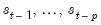
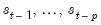
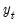
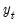
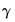
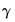

In the case where the probabilities are constant values, we could simply treat them as additional parameters in the likelihood in Equation (39.4). More generally, we may allow for varying probabilities by assuming that

is a function of vectors of exogenous observables

and coefficients

parameterized using a multinomial logit specification:
We may use Equation (39.4) and
Equation (39.5) to obtain a normal mixture log-likelihood function:
The likelihood expression in Equation (39.6) depends on the one-step ahead probabilities of being in a regime: . Note, however, that observing the value of the dependent variable in a given period provides additional information about which regime is in effect. We may use this contemporaneous information to obtain updated estimates of the regime probabilities
The process by which the probability estimates are updated is commonly termed filtering. By Bayes’ theorem and the laws of conditional probability, we have the filtering expressions:
The likelihood obtained by summing the terms in Equation (39.14) may be maximized with respect to the parameters using iterative methods. Coefficient covariances may be estimated using standard approaches.
Estimates of the regime probabilities may be improved by using all of the information in the sample. The smoothed estimates for the regime probabilities in period

use the information set in the final period, , in contrast to the filtered estimates which employ only contemporaneous information,

. Intuitively, using information about future realizations of the dependent variable

() improves our estimates of being in regime

in period

because the Markov transition probabilities link together the likelihood of the observed data in different periods.
The key in moving from the first to the second line of Equation (39.16) is the fact that under appropriate assumptions, if were known, there is no additional information about in the future data

.
Note that apart from the smoothed probability terms, , all of the terms on the right-hand side of Equation (39.16) are obtained as part of the filtering computations. Given the set of filtered probabilities, we initialize the smoother using , and iterate computation of
Equation (39.16) and
Equation (39.17) for

to obtain the smoothed values.
Briefly, the Hamilton filter extends the analysis in “Markov Switching” to handle the larger dimensional state vector. While the mechanics of the procedure are a bit more involved, the concepts follow directly from the simple filter described above (
“Likelihood Evaluation and Filtering”). The filtered probabilities for lagged values of the states,  conditional on the information set

are obtained from the previous iteration of the filter, and the one-step ahead joint probabilities for the state vector are obtained by applying the Markov updates to the filtered probabilities. These joint probabilities are used to evaluate a likelihood contribution and in obtaining updated filtered probabilities.
The simple switching results outlined earlier (“Simple Switching”) do not hold for the simple switching with autocorrelation (SSAR) model. As with the MSAR specification, the presence of lagged states in the specification complicates the dynamics and requires handling a

dimensional state variable representing current and lag states.


. All that we require for implementation are the initial filtered probabilities, , or alternately, the initial one-step ahead regime probabilities . See “Initial Probabilities” for discussion.
The likelihood obtained by summing the terms in Equation (39.14) may be maximized with respect to the parameters using iterative methods. Coefficient covariances may be estimated using standard approaches.Estimates of the regime probabilities may be improved by using all of the information in the sample. The smoothed estimates for the regime probabilities in periodso that lagged endogenous regressors may be treated as additional regime specific
or invariant
for purposes of likelihood evaluation, filtering, and smoothing. Thus, the discussions in “Simple Switching” and “Markov Switching” are directly applicable in MSDR settings.
dimensional state vector representing the current and
previous regimes are required to obtain a representation of the likelihood.
dimensional state vector and
regimes, the number of potential realizations is
. The description of the basic Markov switching model above (“Markov Switching”) is no longer valid since it does not handle the filtering and smoothing for the full
vector of probabilities.
Briefly, the Hamilton filter extends the analysis in “Markov Switching” to handle the larger dimensional state vector. While the mechanics of the procedure are a bit more involved, the concepts follow directly from the simple filter described above (“Likelihood Evaluation and Filtering”). The filtered probabilities for lagged values of the states,  conditional on the information setdimensional state vector. We may proceed as in the uncorrelated model by setting
initial probabilities in period
using one of the methods described in “Initial Probabilities” and recursively applying Markov transition updates to obtain the joint initial probabilities for the
dimensional initial probability vector in period .
 follows a process that depends on the value of an unobserved discrete state variable
follows a process that depends on the value of an unobserved discrete state variable  . We assume there are
. We assume there are  possible regimes, and we are said to be in state or regime
possible regimes, and we are said to be in state or regime  in period
in period  when
when  , for
, for  .
. and
and  , the conditional mean of  in regime
, the conditional mean of  in regime  is assumed to be the linear specification:
is assumed to be the linear specification: and
and  are and vectors of coefficients. Note that the
are and vectors of coefficients. Note that the  coefficients for are indexed by regime and that the  coefficients associated with
coefficients for are indexed by regime and that the  coefficients associated with  are regime invariant.
are regime invariant. , where
, where  is standard normally distributed. Note that the standard deviation
is standard normally distributed. Note that the standard deviation  may be regime dependent, .
may be regime dependent, . are parameters that determine the regime probabilities, is the standard normal density function, and is the information set in period
are parameters that determine the regime probabilities, is the standard normal density function, and is the information set in period  . In the simplest case, the
. In the simplest case, the  represent the regime probabilities themselves.
represent the regime probabilities themselves. .
. . The special case of constant probabilities is handled by choosing
. The special case of constant probabilities is handled by choosing  to be identically equal to 1.
to be identically equal to 1. using iterative methods.
using iterative methods. for all
for all  , but this restriction is not required.
, but this restriction is not required.  -th element represents the probability of transitioning from regime
-th element represents the probability of transitioning from regime  in period
in period  to regime
to regime  in period
in period  . (Note that some authors use the transpose of
. (Note that some authors use the transpose of  so that all of their indices are reversed from those used here.)
so that all of their indices are reversed from those used here.) of the matrix
of the matrix and
and  with the normalizations .
with the normalizations .  :
: is obtained by summing the joint probabilities across unobserved states to obtain the marginal distribution of the observed data
is obtained by summing the joint probabilities across unobserved states to obtain the marginal distribution of the observed data is then obtained by marginalizing the joint probability with respect to
is then obtained by marginalizing the joint probability with respect to  :
: .
.  lagged endogenous regressors, and random state variable
lagged endogenous regressors, and random state variable  taking the value
taking the value  we have:
we have: is again
is again  standard normally distributed. The coefficients on the lagged endogenous variable are allowed to be regime-varying, but this generality is not required.
standard normally distributed. The coefficients on the lagged endogenous variable are allowed to be regime-varying, but this generality is not required. , we have the AR specification
, we have the AR specification information is somewhat arbitrary in the case of time-varying transition probabilities.
information is somewhat arbitrary in the case of time-varying transition probabilities.